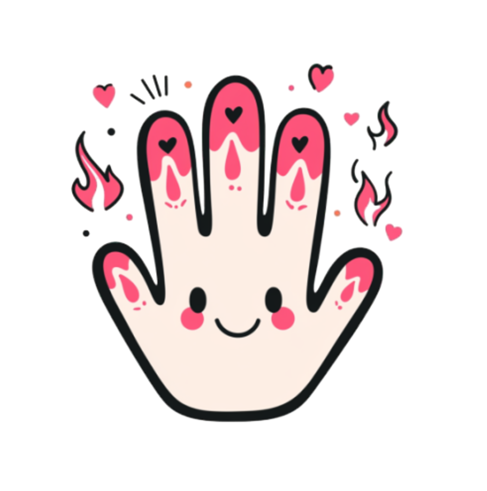

시작 버튼을 눌러 질문을 확인하세요.
'나는 절대로...' (Never Have I Ever)는 친구들의 비밀을 알아낼 수 있는 최고의 파티 게임입니다. 술자리나 모임에서 분위기를 띄우기에 아주 좋습니다. 방법은 다음과 같습니다:
온라인 '나는 절대로...' 게임은 단순한 시간 때우기를 넘어 특별한 즐거움을 선사합니다:
게임의 재미를 실 배로 만드는 방법들입니다:
네! 한 명의 스마트폰 화면을 같이 보거나, 화상 통화 중이라면 화면 공유 기능을 통해 전 세계 친구들과 원격으로 즐길 수 있습니다.
아닙니다. 한 세션 동안은 질문이 중복되지 않도록 설계되어 있어 계속해서 새로운 질문을 만날 수 있습니다.
MT, 대학교 동아리 모임, 친구들과의 호캉스, 홈파티 등 어색함을 풀고 싶거나 더 친해지고 싶은 모든 순간에 추천합니다.